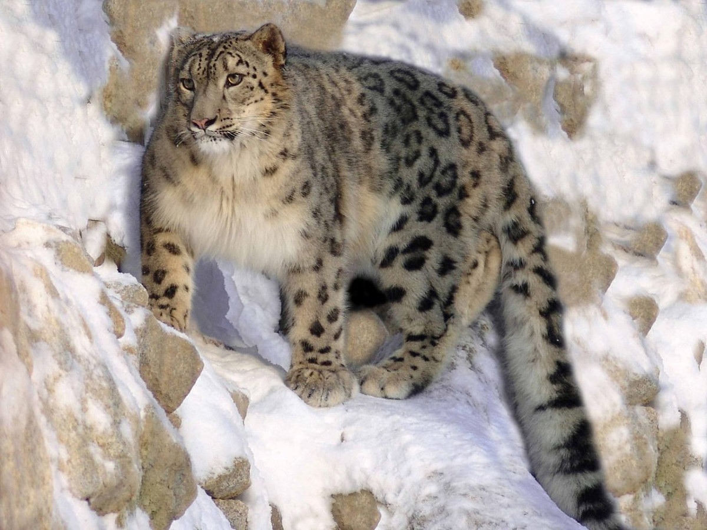
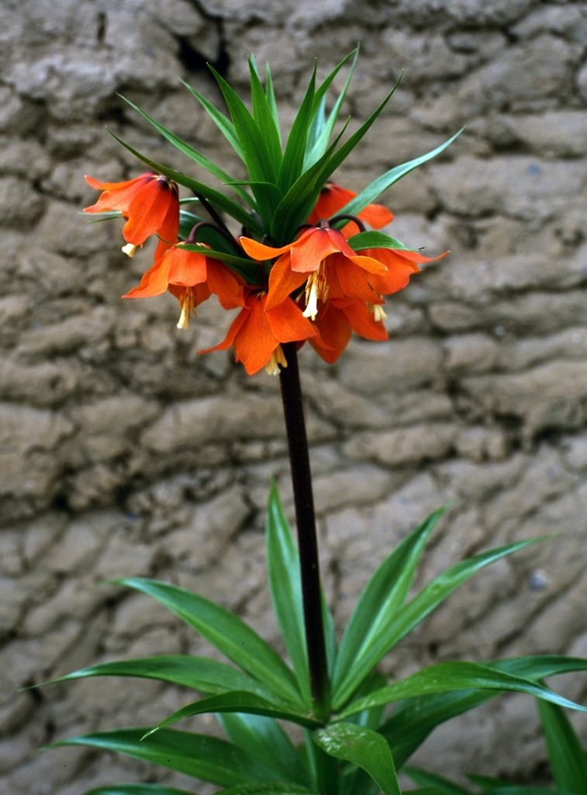
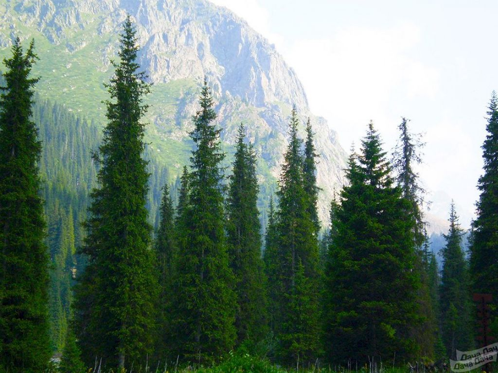

Архар — Ovis ammon L. (по-киргизски: самец — кулжа, самка — архар)
Архар распространен на значительной территории Кыргызстана, в основном это участки высокогорных сыртов, расположенных по государственной границе от пика Хан-Тенгри, на востоке до Ферганского хребта и Алайской долины на западе. Наиболее многочисленны архары на Сары-Джазских, Джеты-Огузских, Покровских и Тонских сыртах, в долинах рек Ак-Сай и Арпа. Реже встречаются в горах, окружающих оз. Сон-Куль и Сусамырскую долину, а также в верховьях Большого Кемина, Семизбеля, в Таласском хребте и на юж¬ных склонах западной части Киргизского хребта. Архары — это типичные обитатели высокогорной степи, альпийских лугов и предгорий хребтов.

Снежный Барс
ОПИСАНИЕ ВИДА (особенности биологии): Самцы обычно крупнее, массивнее, крепче своих соплеменниц. Взрослые самцы весят от 65 до 75 кг. Длина тела - до 2,1 м. Хвост (3/7 общей длины) толстый, покрытый густой шерстью, поэтому и кажется, что у барсов хвост потолще, чем у леопардов. Туловище тоже покрыто длинной шерстью, на вид она грязновато-дымчатая. Густой длинный подшерсток, поверх которого длинная беловато-серая покровная шерсть, нередко отмеченная желтоватым налетом. Голова же барса небольшая и довольно изящная. Ее украшают маленькие, целиком черные пятна. Пятна на туловище (вплоть до бедер и хвоста) другие, они черно-серые или черные кольцевые (в этом случае посредине господствует основной серо-желтый окрас). Нижняя сторона туловища, а также внутренняя часть ног расцвечена белым. По краю белого меха пятна полностью черные: такие же они и на ногах снаружи. Зрачок круглый; зрение острое, хорошо развитое, да и другие органы чувств отменно служат барсу.
Цветок Айгуль

Лепесток размером 120 см. Листья ланцетоподобные, 12-24 см, яркие, зелёные. 35-50 листьев. Цветков 5-20, собраны в соцветия, оранжевые, или тёмно жёлтые, размером 6 см. Размножается с ранней весны по середину лета, семенами, или корешками. Появляется цветок через 5-6 лет после посева. Обитает в Средней Азии.
Этот ярко-оранжевый цветок произрастает на территории Киргизии и на Туркестанском хребте. Название цветка переводится, как Лунный Цветок. Научное название Рябчик Эдуарда. Когда цветок начинает цвести, местные жители устраивают праздник цветка.
Айгуль занесен в Красную Книгу, поэтому срывать его нельзя, иначе вам грозит штраф! Особенность цветка в том, что он растет на теневой стороне гор. Стебель высотой около одного метра. Каждый год на стебле появляется по одному бутону, можно сосчитать, сколько лет одному растению. Местные жители говорят, что встречали Айгуль с 30 бутонами!
Ель Тянь-Шаньская

Деревья достигают 60 метров в высоту. Диаметр ствола достигает 2 метров. Средняя продолжительность жизни около 250—350 лет. Кора коричневого цвета. Крона цилиндрическая или узко пирамидальной формы. Корневая система поверхностная. Помимо обычных корней есть якорные корни — такой корень, в отличие от питающих корней, наткнувшись в почве на крупный камень или выступ скалы, не отворачивает в сторону, а наоборот, растёт под него, загибается и таким образом заякоривает растение.
Иглы хвои расположены радиально, направлены вперёд, прямые или слегка изогнутые, в поперечном сечении ромбические.
Плод тянь-шаньской ели — шишка. Шишки зелёного или фиолетового цвета, цилиндрической формы, длиной от 6 до 11 см, в диаметре 2,5—3,5 см. Размножается семенами, которые разносятся ветром. Созревают в сентябре — октябре. Начало плодоношения происходит в возрасте от 10 до 60 лет (в зависимости от условий произрастания).
В отличие от других хвойных пород, в хвое тянь-шаньской ели в зимнее время вырабатывается витамин С.
Видео диких Животных
Видео растений Кыргызстана
Виды рыб Кыргызстана
Основными промысловыми видами рыб в водохранилищах и озерах являются иссык-кульская форель - гегаркуни, сиг-лудога, пелядь, карп - сазан, лещ, линь, судак, белый амур, толстолобик, маринка.
.webp)